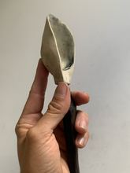
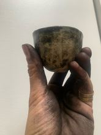
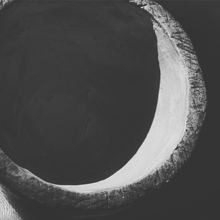
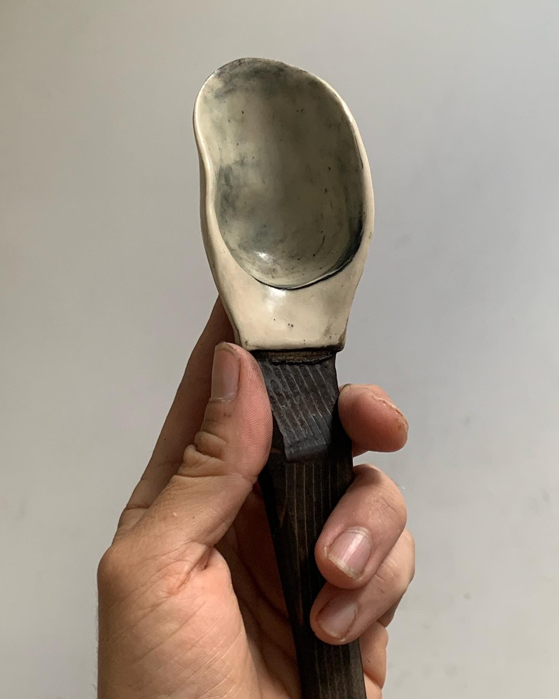
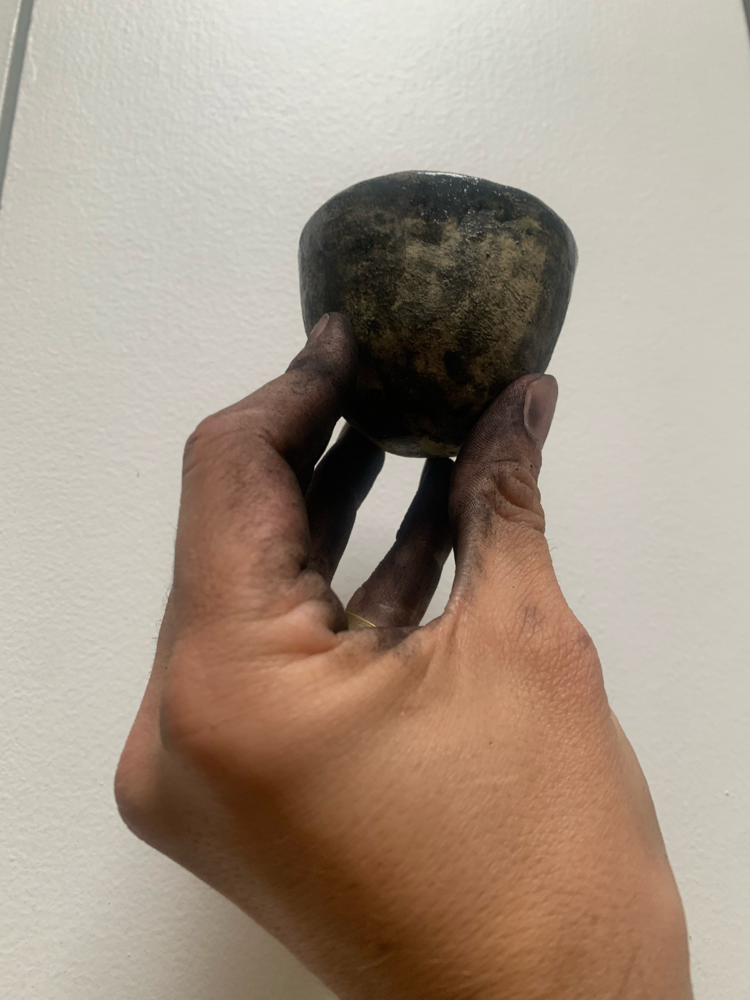
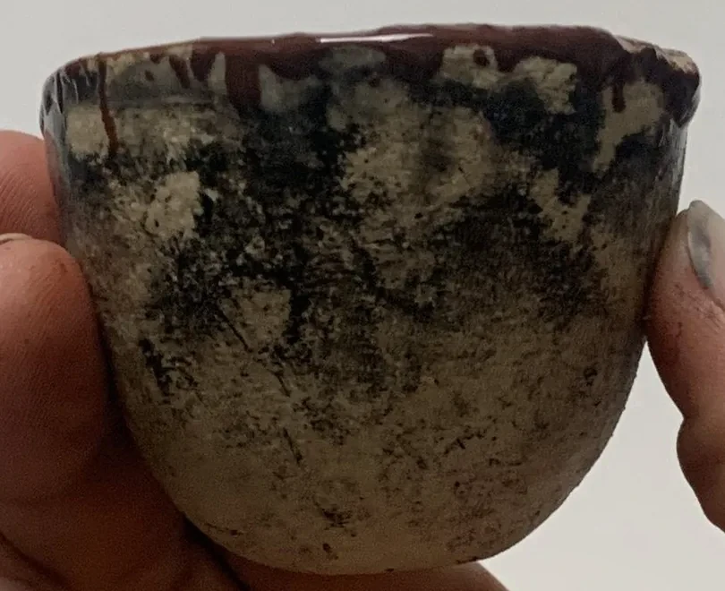
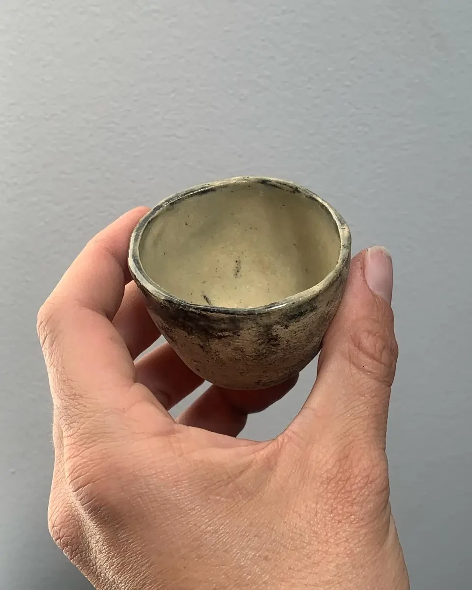
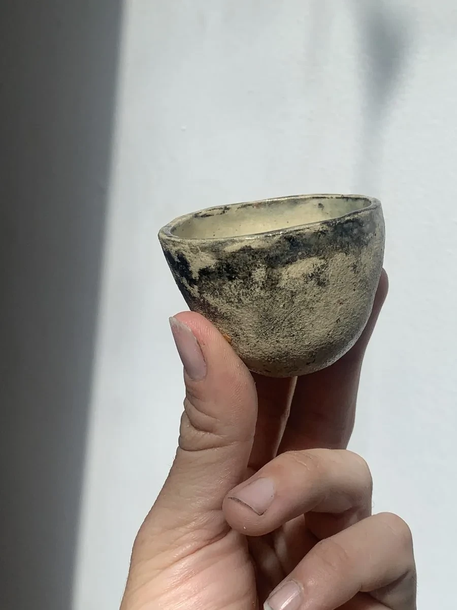
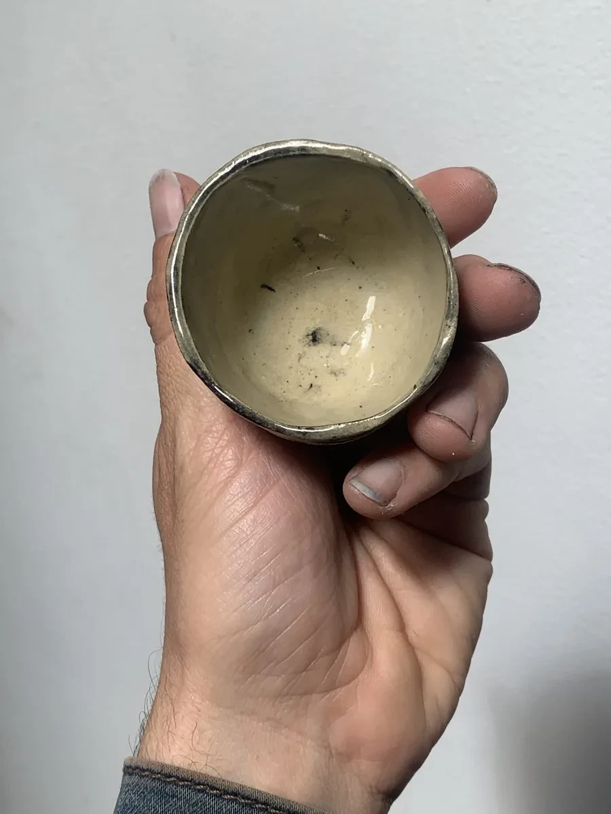
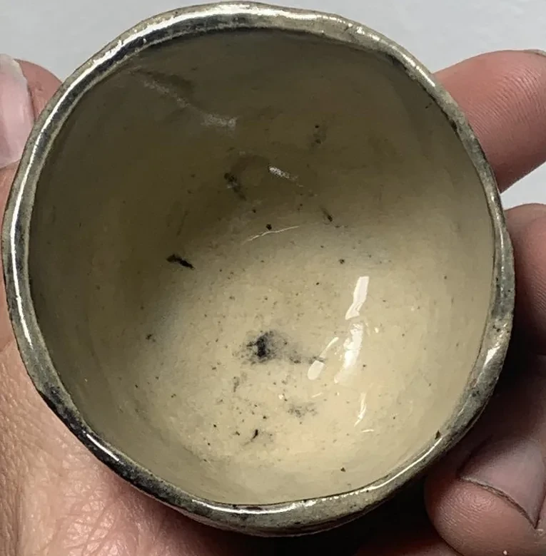

Gill James
Work examples for Permanent Impermanence

ice cream scoop
ceramic cup carved paddle
carved paddle
 moss vessel
moss vessel

bowl rim hanging sculpture
hanging sculpture
 Spirit Eye of skwácháýs
Spirit Eye of skwácháýs
 forest canopy
rosebuds
forest canopy
rosebuds
 Weird Kid
Weird Kid
 One With the Devil
One With the Devil
 untitled colour work
untitled colour work
 Lost in Time
CV
Lost in Time
CV
Each star is a work. Drag sideways to move through them. Tap one to open it, or pinch into it. Pinch out to step back to everything.
begin ↓


Objects · 1 of 13
ice cream scoop









Objects · 2 of 13
ceramic cup
Objects · 3 of 13
carved paddle
Objects · 4 of 13
moss vessel
Objects · 5 of 13
bowl rim
Sculpture · 6 of 13
hanging sculpture
Sculpture · 7 of 13
Spirit Eye of skwácháýs
Photographs · 8 of 13
forest canopy
Photographs · 9 of 13
rosebuds
Film · 10 of 13
Chris Malinchak and Kiesza · Weird Kid
Director, Director of Photography · music video · 03:44
dir. Gill James & Kiesza
Film · 11 of 13
One With the Devil
Cinematographer · short · 2015 · dir. Drew Pollins
Leo Award, Best Cinematography in a Short Drama (2015)
CSC Student Cinematography Award (Panavision Canada) 2015
Film · 12 of 13
untitled colour work
2022
Untitled colour work. 2022. Moving image, 8 seconds.